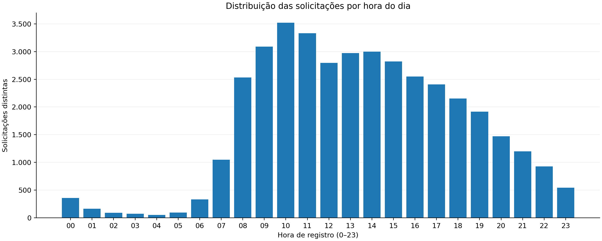
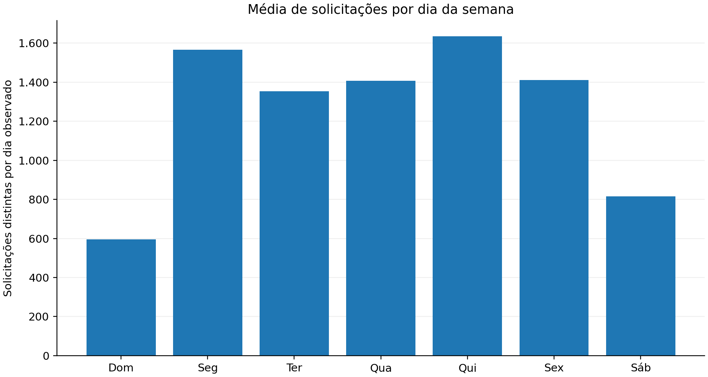

O problema
The problem
Como os chamados da Central 156 se distribuem ao longo do tempo? Antes de responder, é preciso verificar dados faltantes e a diferença entre registros e solicitações para não superestimar a demanda.
How are requests to Curitiba's municipal 156 service distributed over time? Before answering, the analysis must distinguish raw records from request IDs and assess data quality.
Pergunta central
Core question
O que os registros da Central 156 revelam sobre os padrões de demanda municipal e quais cuidados de qualidade são necessários para analisá-los?
What do the service records reveal about municipal demand patterns, and what data-quality controls are necessary for reliable analysis?
A solução e o processo
The approach
SQL como ferramenta central: exploração, auditoria, preparação temporal, agregações, CTEs e verificação dos totais. Execução no MySQL via DBeaver; gráficos elaborados a partir dos resultados agregados.
SQL is the core analytical tool: profiling, quality checks, temporal preparation, aggregations, CTEs and validation. Queries run in MySQL through DBeaver; charts use aggregated outputs.
Uma solicitação pode ter várias linhas
One request can have several rows
2.030
números de solicitação se repetem. Por isso, a análise de demanda usa COUNT(DISTINCT SOLICITACAO).
2,030
request IDs appear more than once. Demand indicators use COUNT(DISTINCT SOLICITACAO).
Horários precisaram de preparação
Time values needed preparation
100%
dos horários tinham espaços extras. Com TRIM, passaram a validação de formato.
100%
of time strings included trailing spaces. They passed format checks after TRIM.
Exemplo de SQL aplicado
Applied SQL example
SELECT
HOUR(CAST(TRIM(HORARIO) AS TIME)) AS hora_do_dia,
COUNT(DISTINCT SOLICITACAO) AS total_solicitacoes
FROM modulosql.chamados156
GROUP BY hora_do_dia
ORDER BY hora_do_dia;A consulta corrige o texto do horário e evita contar solicitações repetidas. O README contém as consultas de auditoria e o SQL completo do heatmap.
This query cleans the time strings and prevents duplicate requests from inflating counts. The README links to the complete audit and heatmap queries.
Resultados e visualização
The results
Descobertas preliminares, baseadas em 39.451 solicitações distintas. Os gráficos mostram quando a demanda foi registrada no recorte analisado.
Validated preliminary findings from 39,451 distinct requests. The charts show when requests were logged in the observed period.
Pico por hora
Peak hour
3.520 solicitações distintas no período.
3,520 distinct requests during the study period.
Período 08h–17h59
8 a.m.–5:59 p.m.
das solicitações foram registradas nesse intervalo.
of requests were recorded in this interval.

Maior média diária
Highest daily average
1.634,25 solicitações por quinta-feira observadarequests per observed Thursday
Menor média diária
Lowest daily average
594,75 solicitações por domingo observadorequests per observed Sunday

Heatmap: quando os chamados se concentram?
Heatmap: when do requests concentrate?
O maior pico médio foi na segunda-feira às 10h (147,2 solicitações). Quinta-feira às 11h teve 146,25.
The highest average was Monday at 10 a.m. (147.2 requests), closely followed by Thursday at 11 a.m. (146.25).